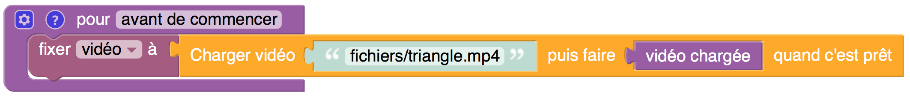
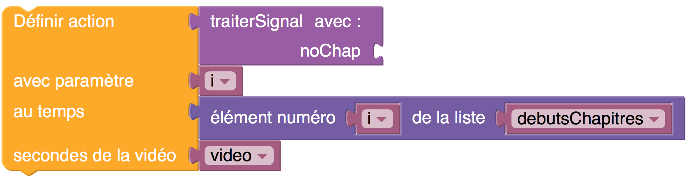

Catégorie : Vidéos
Les blocs de cette catégorie permettent de charger une vidéo et de la placer dans notre page web. Par la suite, on pourra la mettre en marche ou l'arrêter, ainsi que sauter directement à un moment choisi. On pourra aussi spécifier des actions qui pourront être déclenchées automatiquement quand la vidéo arrive à certains moments. Pour plus de détails sur la façon de procéder, voir l'exemple suivant.
Veuillez noter que les blocs de cette catégorie n'apparaissent pas automatiquement au lancement de l'éditeur p5Visuel. Pour les faire apparaître, activez l'item Montrez les blocs Vidéos du menu AIDE - CONFIGURATION de l'éditeur p5Visuel. Vous pouvez aussi les faire apparaître au lancement de l'éditeur en ajoutant à l'adresse de l'éditeur le suffixe ?blocs=videos.
Charger la vidéo
Paramètres
• une valeur nomVideo (vide ci-dessus, mais qui peut
être un chemin d'accès quelconque)
• une fonction sans paramètre
Fonctionnement
• charge en mémoire la vidéo contenue dans le fichier spécifié, et
l'affiche dans notre page web
• le bloc retourne un objet vidéo, que l'on doit placer dans une
variable
Remarques
• les blocs successifs d'un programme p5Visuel sont
exécutés séquentiellement, mais on n'attend pas nécessairement
que l'exécution du bloc courant soit terminée avant de commencer
l'exécution du bloc suivant. C'est le cas, par exemple,
lorsqu'on accomplit une tâche comme charger une vidéo.
• pour être certain que notre vidéo est suffisamment chargé avant
d'amorcer la fonction actions initiales, on peut
commander
le chargement du vidéo dans une fonction spéciale nommée avant
de commencer : par exemple

Mettre en marche
Paramètres
• un objet vidéo
Fonctionnement
• met la vidéo en marche
Mettre en pause
Paramètres
• un objet vidéo
Fonctionnement
• met la vidéo en pause
Sauter à un temps donné
Paramètres
• un objet vidéo
• une valeur temps
Fonctionnement
• fait sauter la vidéo au temps donné
Remarques
• si la vidéo est en marche, elle reste en marche; si
elle est en pause, elle reste en pause
Définir une action
Paramètres
• une fonction action, avec un paramètre (qu'on
ne spécifie pas tout de suite)
• une valeur param qui sera utilisée comme paramètre de
la fonction action
• une valeur temps
• un objet vidéo
Fonctionnement
• quand la vidéo arrivera au temps spécifié,
la fonction action sera appelée, en transmettant param
comme valeur
Remarques
• Pour plus de détails sur le fonctionnement de ce bloc, voir l'exemple
suivant., et en particulier
